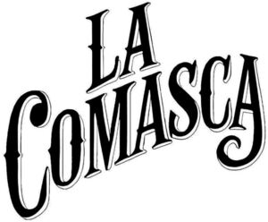

Trade Mark Journal No.2025/035 29 August 2025
WO0000001870066 (16,18,21,25,32,43)
Office of origin: European Union Intellectual Property Office (EUIPO)
Date of International Registration:18 April 2025
Date of designation in the UK:
18 April 2025

International priority date claimed: 11 April 2025
(European Union Intellectual Property Office (EUIPO))
(019171918)
- Class 16
- Diaries; note books and scrap books; paper stationery; pens; fountain pens; ball pens; pencils; brush pens; boxes for pens, not of precious metal; adhesive labels; stickers, transfers; flags made from paper; banners of paper; calendars; catalogues in relation to the following goods: motor bikes and fittings therefor; paper atlases; brochures relating to travel, leisure and entertainment; pamphlets relating to travel, leisure and entertainment; loose-leaf binders for papers and documents; albums for stamps, trading cards, coins and photographs; magazines relating to travel, leisure and entertainment; lithographs; photographs [printed]; newspapers; print magazines relating to travel, leisure and entertainment; books relating to travel, leisure and entertainment; photographic prints, posters, postcards; erasers; cardboard boxes; appointment books; photograph albums; greeting cards; scratch pads; paper entrance tickets for general use; envelopes (stationery); visiting cards.
- Class 18
- Pocket wallets; handbags; trunks [luggage]; suitcases; beach bags; make-up bags, not fitted; boston bags; handbags; travel baggage; card wallets [leatherware]; card cases of leather; leather credit card holders; file folders made of leather; leather key cases; sports bags, namely all purpose sport bags, bags for sports, bags for climbers, knapsacks and backpacks; evening and shoulder bags for ladies; shopping bags made of skin; school book bags; travel garment covers; shoe carriers for travel; nappy bags; travelling cases; canvas bags; overnight bags; school bags; formal handbags; vanity cases (not fitted); worked or semi-worked hides and other leather; cases made of leather, boxes made of leather; briefcases [leather goods]; straps made of leather; umbrellas; leather leashes.
- Class 21
- Glasses, wine glasses and barware; beer glasses; beer mugs; beer pitchers; coasters, not of paper or textile, for beer mugs; non-electric bottle openers; bottle openers [manual]; bottles; table plates; knife rests for the table; coffee services [tableware]; ice buckets; portable cool boxes, non-electric; liqueur sets; tea services [tableware]; spice sets; cruet sets for oil and vinegar; baking mats; cups; kitchen utensils; utensils for household purposes; toilet utensils; holloware; trays for household purposes; sugar bowls; corkscrews, electric and non-electric; cool bags for foodstuffs or beverages.
- Class 25
- Jackets [clothing]; sweaters; trousers; skirts; dresses; coats; overcoats; parkas; shirts; underwear; bathing suits; dressing gowns; shawls; scarves; cravats; shoes; heels; beach shoes; gymnastic shoes; boots; ski boots; half-boots; sandals; bath sandals; visors [headwear]; leather jackets; trousers of leather; leather belts; waist belts; quilted jackets; overcoats; denim jeans; cardigans; evening wear; short-sleeve shirts; sweat shirts; maillots [hosiery]; polo shirts; blazers; casual shirts; galoshes; galoshes; golf footwear; basketball sneakers; rugby boots; boxing shoes; baseball shoes; running shoes; working shoes; hockey shoes; handball shoes; winter gloves; coats made of leather; leather skirts; leather tops; leather raincoats; long coats of leather; overcoats of leather; braces of leather; dresses; cloaks; raincoats; pullovers; undershirts; chemises; baby doll nighties; dressing gowns; swimwear; negligees; evening wear; one-piece garments; two-piece dresses; neck ties; men's suits; dress shirts; leotards; trousers; shorts; athletic shoes; slippers; covers for shoes; low-heeled shoes; leather boots; clogs; fishing shoes; dress shoes; walking shoes; varnished shoes; inner soles; soles for footwear; footwear uppers; heels for boots and shoes; non-slipping pieces for shoes and boots; footwear (tips for -); rainshoes; straw shoes; apres-ski shoes; football shoes; lace boots; espadrilles; gloves [clothing]; skin gloves; fingerless gloves; hats and caps; hats and caps of leather.
- Class 32
- Beer and non-alcoholic beer; non-alcoholic, flavored, energy drinks; syrups for beverages; beer-based beverages.
- Class 43
- Housing agencies; day-nurseries [crèches]; cafés; cafeterias; tourist homes; providing campground facilities; rental of temporary accommodation; canteens; rental of cooking apparatus; rental of drinking water dispensers; rental of meeting rooms; boarding house services; hotel reservations; temporary accommodation reservations; restaurants; self-service restaurants; hotel services; bar services; holiday camp services; food and drink catering; motel services; snack-bar services; providing of temporary accommodation in holiday homes and apartments; rental of temporary accommodation in the form of chalets and bungalows; rental of rooms for ceremonies, conferences, colloquiums, shows, seminars and meetings; rental of rooms for temporary stays; bistro services; arranging of accommodation for holiday makers; providing temporary accommodation in hotels, motels and boarding houses; providing of information regarding oenological characteristics; providing of catering services for sporting events, concerts, conventions and exhibitions; reception services for temporary accommodation [management of arrivals and departures]; personal chef services; night club services [provision of food]; bed and breakfast services.
SENT ENTERTAINMENT ITALY S.R.L.
Representative: JACOBACCI & PARTNERS S.P.A., Corso Emilia, 8, I-10152 Torino, ITALY